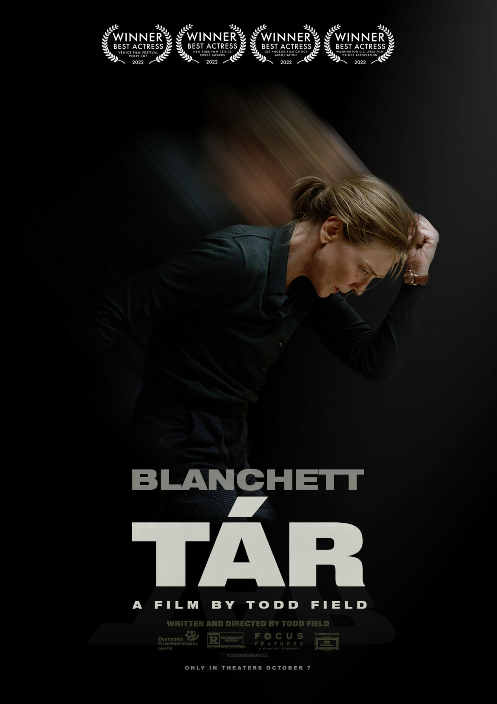

In Progress
Expected Soon!
The book is based on the six-times Academy award nominated film, Tár written and directed by Todd Field. Cate Blanchett plays the fictional, titular role where she is the first, female principal conductor of the Berlin Philharmonic. Tár is introduced in the film preparing for a much anticipated live recording of Mahler's Fifth Symphony, returning to her bourgeois life in post-Covid normalcy when her meticulously crafted image of a public intellectual begins to crack.
Tár on Tár's narrative is largely inspired by the six-minute introductory monologue Adam Gopnik reads on stage to an uptight audience on her importance and accomplishments. The rest is a reimagined portrait of her upbringing and youth in adherence to the clues revealed by the film. Much like herself, the book takes an interdisciplinary approach to everything. There's no passive occurrence or spontaneity in her life. Everything has a reason to exist, bears a purpose and collides to her orbit for a rigorously valid reason.
The film shows no mercy at certain saturated topics. In the film, Tár vanquishes discussions on identity politics and gender bias, amongst others, with her trademark razor-sharp shrewdness and calculating intelligence. Likewise, Tár on Tár religiously abides by this on-screen persona. I wholeheartedly believe that my only priority here is to make sure that the Tár in the film is exactly the Tár readers confront in the book. Any disparity would be an absolute waste of human efforts.
Read an excerpt
Can't see the PDF? Open it in a new tab.